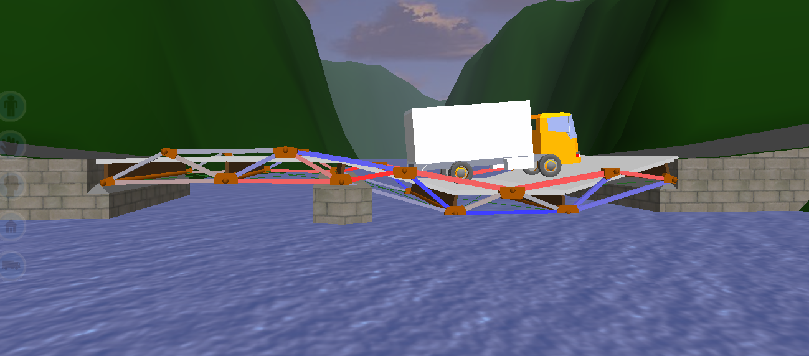

Project 2.3.2 West Point Bridge Design
Project Manager: Me (Aviram Bhalla-Levine)
Project Members: Christopher Garduno, Lemar Popal, Sarang Vadali
Class: Principles of Engineering
Date: 14 March 2015
Summary: In this project, my team was challenged with the problem of people needing to cross a river without the use of boats, or projectile transport.We were to design and test a prototype for a bridge to solve this problem using the West Point Bridge Design software.
My Role: In this project, I was responsible for over half of the documentation, and I created the final design solution. I wrote the design brief, illustrating the constraints and necessities of this project. I also facilitated the decision matrix process, where my team member and I decide what bridge we would further pursue in our designs to develop a solution. As we modified the design we chose in the decision matrix, I kept a careful eye on the various stresses on the members of the bridge, along with the cost to maximize the efficiency of our "funds." Additionally, as Project Manager, I made sure everyone was on task.
What I learned: As a technical writer, I was able to expand on my skills in documentation in this project as I didn't experience much trouble actually prototyping the design and therefore had more time to document. As a project manager, I learned to lead when there is only one other person and was also able to help other teams that were having difficulty.
Images:
Our final solution to the project with annotation as to the workings of the bridge.
An image of one of the designs ultimately not chosen as the final solution.